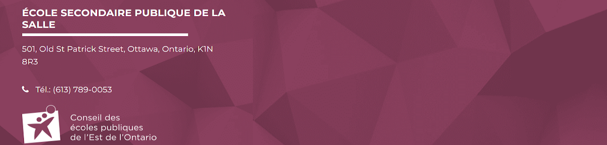

Selon toutes les lois connues de l’aviation, il est impossible qu’une abeille soit capable de voler. Ses ailes sont trop petites pour faire décoller son gros petit corps du sol. L’abeille, bien sûr, vole de toute façon parce qu’elle ne se soucie pas de ce que les humains pensent être impossible. Jaune, noir. Jaune, noir. Jaune, noir. Jaune, noir. Ooh, noir et jaune ! Secouons-le un peu. Barry ! Le petit déjeuner est prêt ! À venir! Attendez une seconde. Bonjour? Barry ? Adam? Pouvez-vous croire que cela se produit ? Je ne peux pas. Je viendrai te chercher. J'ai l'air vif. Utilisez les escaliers, votre père a payé beaucoup d'argent pour cela. Désolé. Je suis surexcité. Voici le diplômé. Nous sommes très fiers de toi, mon fils. Un bulletin parfait, tous des B. Très fier. Maman ! J'ai quelque chose à faire ici. Tu as des peluches sur ton duvet. Aïe ! C'est moi! Faites-nous signe ! Nous serons dans la rangée 118 000. Au revoir! Barry, je te l'ai dit, arrête de voler dans la maison ! Salut, Adam. Salut, Barry. C'est du gel duveteux ?
